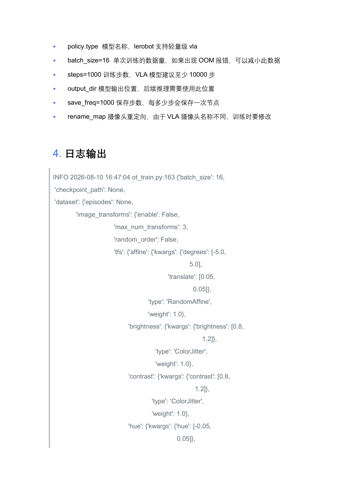
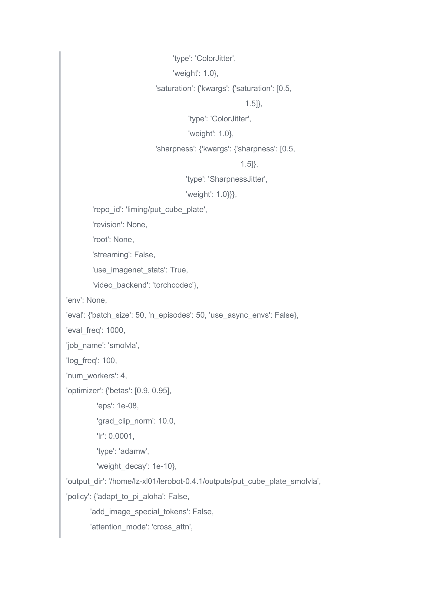
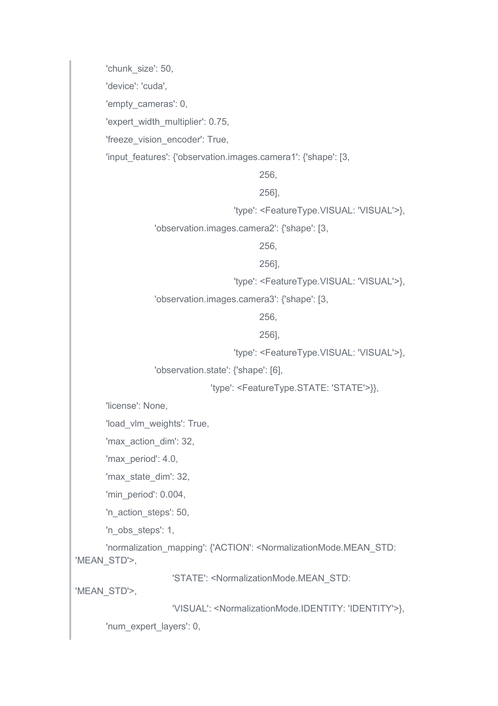
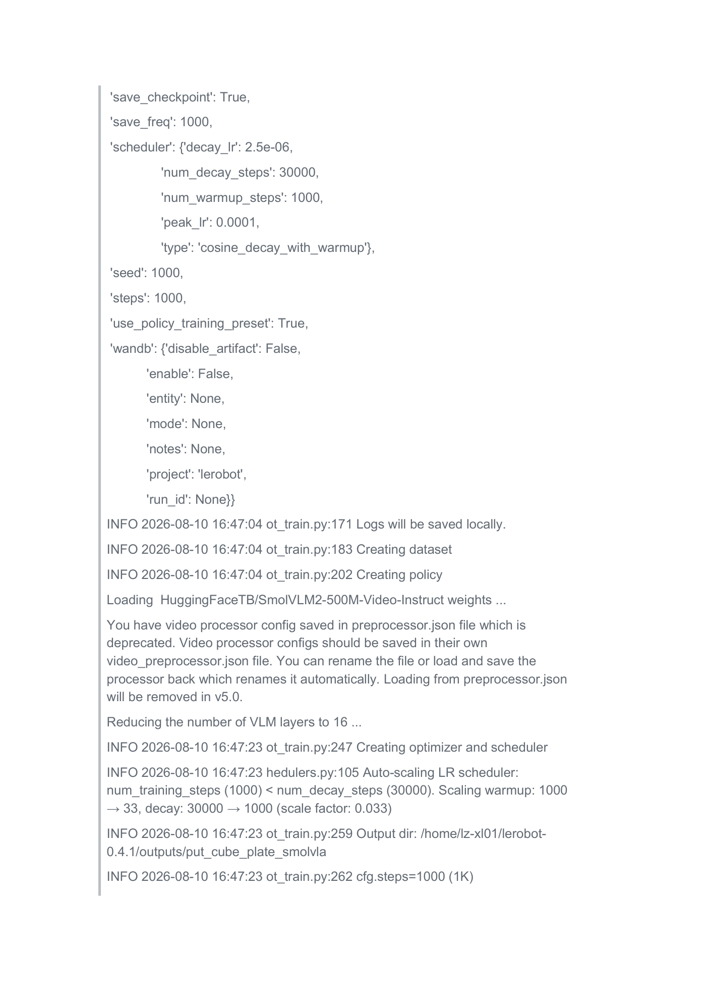
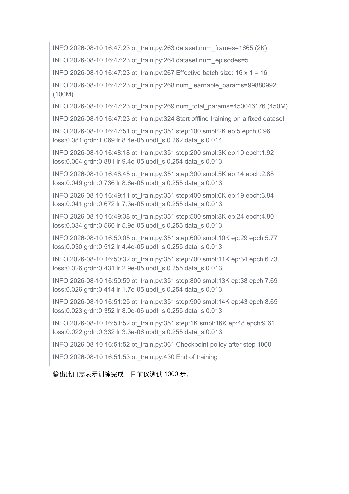

VLA 大模型路线与对比
同一批示范数据，换一条路线：把自然语言变成 token，让视觉-语言大模型（SmolVLA）看着"指令"动手。本实验跑通 VLA 微调，并把 ACT 与 VLA 的差异讲透、算清、比明白。
01实验目标
安装 SmolVLA 扩展依赖（pip install -e ".[smolvla]" + 锁定 transformers==4.54.1），配置 HF_ENDPOINT 镜像拉取预训练底座。
用 --policy.path=lerobot/smolvla_base 在同一数据集上微调 VLA，理解 rename_map 为什么必须改写摄像头键名，读懂 100M/450M 参数日志。
从参数量、指令能力、数据需求、算力开销四个维度完成 ACT vs VLA 对比报告，能说清"什么时候选哪条路"。
VLA 训练 loss 持续下降并产出 checkpoint；推理时用语言指令（single_task 文本）切换任务；交付一份四维对比表。
用"同一数据、两条路线、同一验收任务"的控制变量法做技术选型对比，结论才经得起追问。
02核心原理：语言如何变成"动作指令"
通俗类比：ACT 像一个只学会一道菜的学徒——你指指红方块和盘子，他就上手干，全程不说话；VLA 像一位看得懂菜谱的大厨——你说"把红方块放进盘子"或"把盖子掀开"，他先读懂话、再看灶台、然后动手。那句话怎么进入模型？
① 语言指令 token 化——文本先被 tokenizer 切成 token 序列（本例 tokenizer_max_length=48，最多 48 个 token，装得下一句完整任务）。每个 token 查词表变成数字向量——就像把汉字转成电报码，模型才能算。指导文件里的 dataset.single_task="Put red cube into plate" 正是这条被 token 化的指令。
② 视觉-语言底座（VLM）——SmolVLA 站在 HuggingFaceTB/SmolVLM2-500M-Video-Instruct（450M 总参数）肩上：图像走视觉编码器（训练时 freeze_vision_encoder=True 冻结，省显存），文本与图像特征在 16 层 VLM 层里做跨模态注意力——"指令里的 red cube 对应画面里那块红色"就是在这层对上的（日志 Reducing the number of VLM layers to 16）。
③ 动作专家（expert）——VLM 输出的融合特征交给动作专家解码出 50 步动作块（chunk_size=50；train_expert_only=True 表示只微调专家与接口层，num_learnable_params=99880992 (100M)，其余 3.5 亿参数冻结）。损失仍是重建 + KL 的回归范式，只是"看和想"的部分换成了大模型。
ACT vs VLA 一览：ACT——无语言、52M 专职小模型、数据要多但专精、一步到位快；VLA——语言驱动、100M 可学/450M 底座、预训练常识可迁移、一条指令切换任务，但更吃显存（batch 16 OOM 就减半）、建议至少 10000 步（示例日志仅测 1000 步）。自回归 vs 并行：VLM 的语言理解部分本质是自回归建模（token 逐个生成的思维链），而动作输出仍走并行块——VLA 是"慢想 + 快动"的组合。

03环境与材料
- ✓LeRobot 源码目录（
pip install -e ".[smolvla]"）+transformers==4.54.1锁版 - ✓网络可达 HF 镜像：
export HF_ENDPOINT=https://hf-mirror.com（下载 SmolVLM2 底座约数百 MB～1GB） - ✓EXP-02 同款数据集
liming/put_cube_plate（VLA 微调复用，不需新采集） - ✓≥24GB 显存显卡（batch_size=16 为文档示例，OOM 即减小）
- ✓对照材料：EXP-02 的 ACT 日志与检查点（用于四维对比）
- ✓磁盘预算：VLA 底座缓存 + 检查点合计预留 ≥5GB（
~/.cache/huggingface/与 outputs 分开算） - ✓对比模板：EXP-04 的四维对比表模板（参数量 / 指令能力 / 数据需求 / 算力开销）
- ✓同一份数据：VLA 与 ACT 对比必须用同一 repo_id、同一 episode 划分，否则"数据需求"与"指令能力"两项对比会失真
配置红线速查（VLA 与 ACT 差异最大的四处）：
| 配置项 | ACT（EXP-02） | VLA（本实验） |
|---|---|---|
| 图像尺寸 | (3, 480, 640) | (3, 256, 256) |
| 可学习 / 总参数 | 52M / 52M（全学） | 100M / 450M（底座冻结） |
| 动作块 chunk_size | 100 | 50 |
| 键名与指令 | left / right / side，无语言入口 | camera1/2/3（需 rename_map），single_task 指令进 tokenizer |
04实操步骤
observation.images.camera1/2/3，原数据为 right/side/left——用 rename_map 重定向（§5 第二条）。num_learnable_params=99880992 (100M) / num_total_params=450046176 (450M)——只有约 22% 在学。Checkpoint policy after step 1000 / End of training 后，仿照 EXP-03 以 --policy.path 推理，改 single_task 文本观察指令切换效果。读日志时按"配置 → 账本 → 曲线"三层核对，任何一层对不上就先停下排查：
| 层级 | 关键行示例 | 核对要点 |
|---|---|---|
| 配置层 | pretrained_path: lerobot/smolvla_base、tokenizer_max_length: 48 | 底座与 48 token 上限是否符合预期 |
| 账本层 | num_learnable_params=99880992 (100M) / num_total_params=450046176 (450M) | 只有专家与接口层在学，底座冻结 |
| 曲线层 | step:100 loss:0.081 → step:1000 loss:0.022 | loss / grdn 双降才算健康 |




05关键命令
# ── 1) 安装 SmolVLA 依赖（第 13 章原文） pip install -e ".[smolvla]" -i https://pypi.tuna.tsinghua.edu.cn/simple pip install "transformers==4.54.1" -i https://pypi.tuna.tsinghua.edu.cn/simple # ── 2) HF 镜像（下载 SmolVLM2 底座用） export HF_ENDPOINT=https://hf-mirror.com # ── 3) VLA 微调（第 13 章原文命令） lerobot-train --dataset.repo_id=liming/put_cube_plate --policy.path=lerobot/smolvla_base --policy.repo_id=put_cube_plate_vla --batch_size=16 --steps=1000 --output_dir=/home/lz-xl01/lerobot-0.4.1/outputs/put_cube_plate_smolvla --policy.device=cuda --num_workers=4 --wandb.enable=false --log_freq=100 --save_freq=1000 --eval_freq=1000 --rename_map='{"observation.images.right":"observation.images.camera1", "observation.images.side":"observation.images.camera2"}' # ── 4) 健康日志（step 100 → 1000） step:100 … loss:0.081 grdn:1.069 lr:8.4e-05 # 权重 accum_to_1000 step:1000 … loss:0.022 grdn:0.332 lr:3.3e-06 Checkpoint policy after step 1000 End of training
- ✓batch_size=16：显存 OOM 时直接减小（8 → 4）。
- ✓steps=1000 是文档示例：VLA 正式训练建议 ≥10000 步（LR 调度 decay 到 30000 步）。
- ✓rename_map 必须给：VLA 的图像通道名为 camera1/2/3，不重定向会因键名对不上而报错。
- ✓save_freq=1000：保存间隔；步数少时每个检查点都要，步数多时可放大。
06动画演示：触发 → 推理 → 执行的两路对比（ACT 无语言 vs VLA 语言指令）
差异凝练成三点：入口（有无语言）→ 脑容量（52M 专职 vs 450M 底座/100M 可学）→ 换任务方式（重训 vs 改一句话）。选择标准：任务固定、算力有限选 ACT；任务多变、要语义泛化、底座可复用选 VLA。
路 B 多出的虚线框就是"token 化 + 跨模态对齐"：语言被切成 ≤48 个 token 后与视觉特征一起送进 VLM——这也解释了 §8 里超长指令会撞上 tokenizer_max_length=48 的原因。
两条路的"执行"端都在循环消费动作块前缀，块长 100（ACT）与 50（VLA）的差别决定了两次推理之间能"续航"多久——动画里两路圆点的节拍差，就是 chunk 差的直观体现。
07互动练习：ACT vs VLA 特性辨析
1. 输入不含语言指令，模型靠"看+状态"直接输出动作。
2. 需要 rename_map 把摄像头键名对齐到 camera1/2/3。
3. num_learnable_params 约 52M，启动快、显存门槛低。
4. 换任务只需改 dataset.single_task 的一句话，常理知识来自预训练底座。
判分说明：每题锁定后不可更改，防止靠试探刷满分；4 道题恰好覆盖 §2 的四个对比维度（输入方式 / 键名约定 / 规模 / 换任务成本），全错请带着错题回看 §2 与 §6 动画。
08常见问题
- ✓显存不足（OOM）：VLA 比 ACT 吃显存，
batch_size16 → 8 → 4；确认 freeze_vision_encoder 与 train_expert_only 仍为 True（全量微调 450M 极易爆）。 - ✓底座下载失败：先
export HF_ENDPOINT=https://hf-mirror.com；transformers 版本漂移就重装transformers==4.54.1。 - ✓数据集键名对不上：报 missing key observation.images.cameraX 时，检查
rename_mapJSON 引号（必须用单引号包 JSON），确认 left/right/side 三路都映射齐。 - ✓loss 几乎不动：steps=1000 对 VLA 太少（文档明确建议 ≥10000）；检查 lr 是否 1e-4 且走了 warmup。
- ✓图像尺寸不一致：VLA 日志为 (3,256,256)，与 ACT 的 (3,480,640) 不同，检查点与数据管线不要混用。
- ✓换了指令却没效果：先确认
single_task文本确实随推理命令传入，再核对加载的是 VLA 检查点（参数账本约 450M）而不是 EXP-02 的 ACT。
| 日志 / 报错 | 含义 | 处置 |
|---|---|---|
Reducing the number of VLM layers to 16 | 瘦身底座层到 16 | 正常，省显存 |
freeze_vision_encoder True | 视觉编码器冻结 | 正常；除非图像域差异极大才解冻 |
Missing observation.images.camera2 | rename_map 漏映射 | 补齐 right/side → camera1/2 |
CUDA out of memory | 显存不足 | batch 减半，避免全量微调 |
09拓展阅读
vlm_model_name、tokenizer_max_length=48、num_vlm_layers 是调成本/性能的三根杠杆；② 官方 lerobot/smolvla_base 底座经过多机器人数据预训练——"常识"来自哪里一目了然；③ 进一步对比三大范式：ACT（分块回归）、Diffusion Policy（迭代去噪出块）、VLA（预训练 VLM + 动作头），从生成视角理解"怎么把场景变成动作"；④ 关注 MoT（Mixture-of-Transformers）类结构与 CoT 推理在机器人策略中的最新进展。